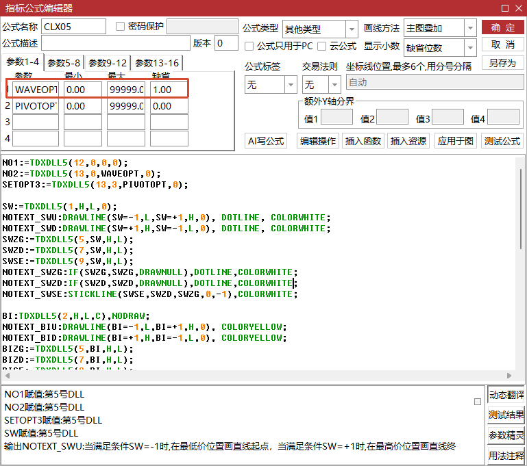

五浪与子浪模型：从均线笔到狂人五浪¶
适用范围：本文描述 fqchan05 内核（均线笔 + 五浪/子浪模型）的算法实现，与 fqchan04 标准笔体系的差异在文中对照说明。产品视角见插件简介。
前六章搭建的是「标准缠论」流水线：包含关系、分型、笔、线段、中枢、买卖点，一层递一层。本章换一条血脉——fqchan05 插件的均线笔 + 子浪 + 五浪模型。它不是标准缠论的再实现，而是民间高手 Coding狂人 2017 年操盘体系的工程化翻译：用一条 10 日均线替代整个分型体系划「浪」，用 34K 阈值把超长浪拆出「子浪」，再在浪序列上识别「五浪下跌 + MACD 背驰」的抄底结构。fqchan04《笔》曾给均线笔留了一段概要（同族插件的分笔路线），本章把它完整展开，并一路讲到五浪信号的输出与用法。
一句话定位：fqchan04 回答「缠论结构怎么划」，fqchan05 回答「狂人模型怎么算」。两者的笔可以对照印证，但不是同一套。
五浪模型：狂人的交易思想¶
Coding狂人（淘股吧 ID，程序员背景，配套软件「猎鲸狂人 KRStockOS」从 V1.0 迭代到 V1.8）的体系有一条明确的声明：与缠论、艾略特波浪理论无关，仅借鉴概念，所有定义独立。他的出发点不是「画出正确的笔」，而是一个交易判断：五浪下跌走完、下跌动能衰竭处，是值得下注的抄底点。逻辑上这就是「三而竭」——五段结构里三段同向（1/3/5 浪下跌），同向力量反复消耗，第五浪创新低而动能跟不上，转折的概率与力度都最大。缠论的一买（趋势背驰）在他的框架里本质上就是一个五浪过程。
五浪下跌是一个严格的端点序列：
v0(顶) ──1笔──> v1(底) ──n1笔──> v2(顶) ──1笔──> v3(底) ──n2笔──> v4(顶) ──1笔──> v5(底)
浪1 主跌 浪2 反弹 浪3 主跌 浪4 反弹 浪5 主跌
- 主跌浪（浪 1/3/5）各为单笔；
- 反弹浪（浪 2/4）可以是 1 笔（干脆利落的反弹），也可以是多笔（盘整/中枢），笔数记作 (n1, n2)；
- (1,1) 是小五浪：两个反弹都是单笔，结构干净；(3,3)、(5,5)、(3,5)、(5,3) 是大五浪：反弹带中枢、筹码换手充分。原始素材的统计结论是「两个中枢均由 3 浪组成时最稳定」。
形状之外，模型用一组硬约束保证「这是一段值得抄的五浪」，每一条都是明确的比较运算：浪 2 反弹幅度不超过浪 1 跌幅的一定比例（不能解救套牢盘）、浪 3 必须是三段主跌中最大、浪 4 不进浪 1 领地、浪 5 必须创新低、总跌幅够深，最后加上灵魂一条——浪 5 的 MACD 绿柱面积小于浪 3（背驰）。价格创新低而绿柱面积缩小，说明最后一跌是惯性滑行而非蓄势下砸，反弹的燃料就在这里。
这套模型的方法论价值在于「把形容词翻译成不等式」：「反弹无力」不可执行，「浪 2 回撤不超过 1/3」可以。主观模型量化的第一步不是找指标，而是让每个形容词变成机器可判定的比较运算。
均线笔：一条均线替代分型体系¶
动机：分型的歧义与均线的无歧义¶
fqchan04《笔》讲过，笔的划分是「千人千缠」的重灾区：包含处理、分型识别、K 线数约束、新旧笔规则层层叠加，每一步都可能引入分歧。狂人的判断更直接：「缠论的笔过于复杂，且并不合理，并不能对所有走势合理划分。」他的替代方案只有一条判定：连续 3 根 K 线不碰 10 周期均线（SMA10），即为有效突破。
- 向上有效突破：连续 3 根 K 线的最低价全部高于 MA10；
- 向下有效突破：连续 3 根 K 线的最高价全部低于 MA10；
- 必须严格连续，中间触碰均线即重新计数。
这个定义同时兼顾空间（价格确实越过了均线）与时间（持续了 3 根 K 线）。3 根的取值参考了缠论笔的结合律——两笔之间不少于 3 根 K 线。相邻两个突破点连起来就是一根浪；缠论叫「笔」，狂人叫「浪」，在均线笔语境下是一回事。
与标准笔相比，均线笔有两个结构性差异。其一，标准笔是纯几何判定，对空间力度无感——只要分型与间隔条件满足就成笔，价格跨度大小无所谓；均线笔天然内置空间维度，穿越均线的幅度越大确认越快。其二，突破 MA10 的过程本质上就是 MACD 金叉或死叉的过程，浪定义与 MACD 体系内在一致——这为后面「浪上叠加 MACD 面积背驰」铺平了道路。狂人用程序自动画浪与缠论手动画笔做过大量逐一比对，结论是效果几乎一致、误差极少，而规则简单了一个数量级。
五阶段状态机¶
fqchan05 把判定过程实现为一个逐根扫描的状态机，像列车经过五个站：
| 状态 | 职责 | 迁移条件 |
|---|---|---|
| INIT | 找方向 | 连续 3 根 K 线站在均线同一侧，标记初始笔底/笔顶 |
| 上涨追踪 | 记最高点 | 出新高则端点迁移；某根 K 线最高价跌到均线下方，进入确认向下 |
| 确认向下 | 数 3 根 | 连续 3 根最高价低于均线 → 锁死笔顶，转下跌追踪；中途回到均线上方 → 回滚 |
| 下跌追踪 | 记最低点 | 出新低则端点迁移；某根 K 线最低价站上均线，进入确认向上 |
| 确认向上 | 数 3 根 | 连续 3 根最低价高于均线 → 锁死笔底，转上涨追踪；中途跌回 → 回滚 |
上涨与下跌完全镜像对称，全算法只有一个判定条件——K 线与均线的位置关系。不需要分型识别，不需要包含处理，不需要新旧笔规则。
三个工程细节决定了它的成色：
- 端点迁移：追踪阶段端点是活的，出新高/新低就跟着移动，端点永远是当前走势的最优极值，方向确认切换后才锁死。这与狂人定义里的「奇点调整」一致——浪中间若有比端点更高/更低的点（奇点），浪点必须调整到奇点。
- 安全回滚：确认失败退回追踪态时，还要检查导致失败的那根 K 线是否创新高/新低。假跌破被否定后，反弹那根 K 线可能恰是新的最高点，不处理则笔顶偏低、后续分析失真。
- 尾部补录：数据结束时算法可能停在任何状态，追踪中把当前极值补录为端点，确认中把上一端点补录为确认态，保证最后一笔不丢。
「无未来函数」在这里的语义是：一根浪的确认需要走出另一根反向的浪，浪会随后续走势自我调整——已确认的端点不推翻，进行中的端点允许迁移。
信号值分层与消费铁律¶
| 信号值 | 含义 | 画笔用 |
|---|---|---|
| 1 / -1 | 确认笔顶 / 笔底（端点） | 用 |
| 0.5 / -0.5 | 潜在笔顶 / 笔底（追踪中） | 不用 |
| 11 / -11 | 分型确认标记（普通） | 不用 |
| 12 / -12 | 分型确认标记（强分型：收盘价突破前一根合并 K 线极值） | 不用 |
| -3 | 序列首零位标记（供程序识别序列类型） | 不用 |
分层设计让下游自选口径：实时预警消费 ±0.5 潜在态，历史分析消费 ±1 确认态。消费铁律是只取严格等于 1 / -1 的位置做端点——任何「非零即端点」的过滤都会把候选与标记混进来，得到顶底不交替的假笔。
子浪划分：为长笔找回细刻度¶
设计定义¶
浪的初衷是降噪，但降噪过头会把该参与分析的波动也滤掉。一根跨 34 根 K 线以上的大笔，在图上只是一条直线，内部藏着两三个回调低点或反弹高点——恰恰是交易最关心的位置。子浪（zilang）是狂人为此发明的补刻度方法，四条定义清晰可执行：
- 触发条件：某浪内部 K 线数超过 34（34 = 13 + 21，斐波那契相邻两项之和，中等时间窗口），才在该浪内插入子浪；
- 子浪端点：最高点在 5 根 K 线窗口内最高的记 A 点，最低点在 5 根 K 线窗口内最低的记 B 点，A、B 相连即一根子浪；
- 双向落差约束：A 的最高点必须高于 B 的最高点，且 A 的最低点必须高于 B 的最低点——B 不能整体落在 A 的振幅内，否则无落差、无分析意义；
- 最小距离：A 到 B 至少 3 根 K 线，瞬间波动不参与。
子浪是非未来函数：它只依赖已出现的时间窗口（5 根 K 线的局部极值），窗口一旦走出就不会变化，已确认的子浪任何回测时点都不被推翻。这是它能上实盘的根基。
工程实现：贪心提升与同向择优¶
fqchan05 的实现骨架是大笔开区间内遍历局部极值候选，异向且过约束就提升为端点。真实数据给它上过一课：下跌途中先出现浅低点 A、满足落差被提升，价格继续走到更深的低点 B 才反转——B 与 A 同向，第一版无条件跳过，端点停在 A 错过真极值。修复是同向择优：同向候选若比已提升端点更极端（低点更低、高点更高），把端点移动到真极值，而不是跳过。A/B 判定与落差约束都不变，只是让同方向多个候选里更极端者胜出。真实 A 股回归中，顶底交替、极值命中、开关回退三项指标全部通过。
开关控制¶
子浪是否划分由开关控制，公式端是 WAVEOPT 参数（1 打开、0 关闭，回退到原笔行为，向后兼容），Python 端是 zilang_enable：

开关的默认值是打开。同一个算法提供「有子浪/无子浪」两种刻度，供不同场景取用。
34K 内只留最大的反弹：从切太碎到克制划分¶
初版子浪上线后暴露出「拆多少」的尺度问题，经历三轮进化：
| 版本 | 策略 | 病灶 |
|---|---|---|
| v1 递归贪心 | 相邻极值对里选 K 线跨度（span）最大的反向段切一刀 | 漏反弹：300355 的 10.50% 大反弹跨在碎片顶之上，不是相邻对，算法没看见 |
| v2 标准笔划分 | 保留所有满足约束的真笔 | 切太碎：000159 一笔切出 5 浪，噪音折返混入，主趋势被淹没 |
| v3 递归贪心 + 合并 | 先合并连续同向碎片极值，再贪心选最大反向 | 两个案例都收敛到 3 浪 |
v3 的关键认知是：v1 漏反弹的根因不在「选最大」策略，而在没合并的碎片极值上贪心。先做一步预处理——连续同向的极值取更极端者合并（顶取 high 最高的、底取 low 最低的，首尾锁定不动）——真反弹就作为唯一的反向段清晰显现，再贪心自然选对。整个算法落在一个递归函数 split_long_bi 里，三步走：
split_long_bi(Va, Vb):
if Vb.pos - Va.pos ≤ 34: 返回 [Va, Vb] # 刹车：足够短不拆
合并连续同向碎片极值（锁首尾）
在交替序列里贪心选 span 最大的反向段（span ≥ min_bars=3）
切在反向段两端，对左/中/右三段递归
共享切点拼接，无合格反向段则保留原样（宁缺毋滥）
34 同时是门槛和刹车：一根笔 34 根 K 线以内认为内部没有值得单独成浪的折返，保持原样；跨过这条线才进去找最大的反弹。切点严格落在开区间内部，每段必然更短，递归必然收敛。「克制不是少做事，而是在正确的尺度上只保留有信号价值的东西」——300355 拆出 3 浪、10.50% 的反弹单独成浪，000159 也停在 3 浪而不是 5 浪。
幅度校验：负幅度浪的排障¶
子浪的选刀准则「span 最大」只看时间维度，2026 年 9 月的一次排障暴露了代价。000910 日线图上出现视觉异常：2026-03-31 是笔顶（+1），2026-06-05 也是笔顶（+1），中间没有可见的谷——顶连顶，交替性疑似被破坏。
排障走了教科书式的假设排除：先逐行复刻 C++ 内核与官方产物逐位比对（74 端点、216 候选全部一致，交替违例为零），再排查公式过滤与渲染链路（无恙），最后只剩一种可能——底存在，但这一笔幅度方向不对。把端点价格连起来看：05-22 的「底」是 6.61，其后的「顶」只有 6.45，底比顶还高。折线经过这两点方向不变、一路向下，人眼自然把它们合并成一笔。这种方向标着向上、价格却向下走的浪，称为负幅度浪；全序列审计发现 73 笔里 10 笔违例，占 13.7%，是系统性缺陷。
根因是两层病灶叠加：均线笔状态机在下跌追踪中只迁移新低、完全不追踪新高，磨着均线上行的爬升反弹对状态机不可见，于是产生了一根 90 根 K 线的超长笔；超长笔送去子浪切分时，选刀只看 span，选中了 10 根的负幅度「反弹」，弃掉了 4 根的真实 +19% 反弹。
修复选在选刀处加一道幅度闸门，方向由反向段类型唯一决定：
// 向下笔找的是「底→顶」反弹：顶的 high 必须高于底的 low
const bool positive_amp = (want_a == -1)
? high[seq[i+1].pos] > low[seq[i].pos] // 底→顶：反弹为正
: low[seq[i+1].pos] < high[seq[i].pos]; // 顶→底：回撤为正
if (!positive_amp) continue; // 4 行，无新分支
改动只有 4 行，效果是结构性的：交替性守住的是符号层合法（顶底成对），幅度守住的是经济层有效（顶高于底）——两道闸门缺一不可。修复后 000910 负幅度浪归零，40 只抽样 3318 个端点零违例；更漂亮的副产品是被吞掉的真实反弹浮出水面——05-20 的 7.49 成为正式笔顶，前后划分与另一套独立实现的 fqchan04 在同一区间完全吻合，两条技术路径收敛到同一答案。已知残留：状态机对爬升反弹的盲区仍在（000910 还有 9 笔内部极值超过端点的包含性违例），动核心状态机前需要更完整的回归基线，留作独立任务。
信号输出与编码¶
结构识别与背驰判定¶
五浪识别以均线笔的端点序列为地基（浪 = 笔），以序列尾部为锚、按「1 笔主跌 + n 笔反弹」反向回溯分组出 v0..v4，逐一校验约束；v5 允许取尾部潜在端点（进行中的第 5 浪，仅最后一个，保守减少误报）。反弹浪笔数恒为奇数（底→顶交替的必然），只在奇数 n ∈ [1, 9] 枚举——超过 9 浪的盘整不识别（狂人软件「盘整超过 9 浪不预警」的口径）。
结构约束以规格书为准（下跌方向）：
| 编号 | 约束 | 判定 |
|---|---|---|
| C1 | 分组结构 | 主跌浪单笔；n1、n2 ∈ [1, 9]；特定模式下 (n1,n2) 按白名单过滤 |
| C2 | 浪 2 反弹幅度 | 不超过浪 1 跌幅的 rebound_max_ratio（默认 1/3，教程版口径） |
| C3 | 浪 3 跌幅最大 | 浪 3 ≥ 浪 1、浪 5（取 ≥，避免等幅抖动漏检） |
| C4 | 浪 4 不进浪 1 领地 | 浪 4 高点 < 浪 1 低点 |
| C5 | 浪 5 创新低 | 浪 5 低点 < 浪 3 低点 |
| C6 | 总跌幅 | 总跌幅 ≥ min_decline_pct（默认 5%） |
| C7 | 中枢隔离 | 中枢 2 区间整体低于中枢 1 区间；反弹为单笔时退化为 C4 |
| C8 | 振幅区间隔离 | 两反弹浪的完整高低范围不接触（退化口径同 C7） |
反弹双阈值是双版本素材的调和：浪 2 用 1/3（教程版）、浪 4 用 1/2（2017.9.28 文档版），各自独立可配。浪 4 另有 C4 兜底。
背驰用 MACD 面积：MACD(12,26,9) 固定参数不开放，柱值与看盘软件同口径；浪 3 绿柱面积 S3 = Σ min(hist, 0)，累加范围按浪端点 bar 区间裁剪（狂人原文承认浪点与金叉死叉有时间位移，按浪区间裁剪是确定化处理）；浪 5 面积 S5 进行中累计到当前 bar。背驰 = |S5| < ratio × |S3|（默认 ratio=1.0）。上涨五浪完全镜像：回调↔反弹、绿柱↔红柱、新低↔新高。
三级信号与重绘契约¶
结构成立只是进入观察池，动手时点分三级，每一级都遵守同一条铁律——当根 K 线收盘时信号即成立，不依赖任何未来数据：
| stage | 名称 | 触发条件 |
|---|---|---|
| 1 | 结构预警 | C1~C8 全过，且浪 5 笔成立（v4 后首次连续 3 根最高价低于 MA10）并已创浪 3 新低（截至当根运行极值越过浪 3 端点），两条件同时满足的首根 bar |
| 2 | 绿柱缩短精确点 | 浪 5 内绿柱绝对值较前一根缩短的首根，且已现绿柱面积 ×2 推算终值仍小于 S3（狂人原法：推算背驰成立才可买）；当根须已破浪 3 低点 |
| 3 | MACD 金叉确认 | 浪 5 完成后 hist 由负转正的首根，且终值 |
stage2 的「当根可行动」来自真实案例的修订（sh688032）：缩柱信号出现时浪 5 运行低点尚未跌破浪 3 低点，新低 7 个交易日后才出现——用未来才出现的低点给今天的信号背书，回测是神信号、实盘是接飞刀，故追加运行时 C5。stage3 的窗口约束同样来自案例（sz000990）：浪 5 中途 hist 微穿 0 轴后价格又连创新低，那次微穿不算确认。stage2 在同一浪 5 内允许多次触发（浪 5 端点迁移后再触发），历史信号保留不去重——与狂人软件「动态刷新」语义一致。
重绘契约：stage1 依赖 v4 确认态，笔确认后不重绘；stage2/3 可在浪 5 进行中（潜在态）触发，端点随后迁移时结构可失效，但已发出的信号保留；全量历史计算与增量实时计算在同一 bar 截面上结果一致，无未来函数泄漏。
信号值编码¶
wulang_sigs[i] = direction × (stage × 100 + type_code)
direction：+1 下跌五浪完成（买入方向）；−1 上涨五浪完成（卖出方向）
type_code = n1 × 10 + n2（各位截断到 9）
一个整数装下方向、阶段、结构分类三个维度，全部取值 ≤ 355、float 精确可表示：
| 信号值 | 解读 |
|---|---|
| 133 | 下跌五浪 (3,3)，stage1 结构预警 |
| 211 | 下跌五浪 (1,1)，stage2 绿柱缩短精确买点 |
| 311 | 下跌五浪 (1,1)，stage3 MACD 金叉确认买点 |
| -233 | 上涨五浪 (3,3)，stage2 红柱缩短精确卖点 |
编码思想沿用 fqcopilot BaseCalculator 的信号分段方案——direction × (model_id × 1000 + occurrence × 100 + entrypoint)，方向 × 模型 × 次数 × 入场点压进一个整数，正负号即买卖方向。五浪模型没有模型矩阵，把「模型号」一段替换为「阶段 + 结构分类」，扫描、选股、复盘共用同一套语义。同一 bar 多信号时取绝对值大者（3 > 2 > 1）。
与 fqchan04 笔体系的配合¶
fqchan05 与 fqchan04 是并行的两条笔体系，配合方式有三层。
语义对齐。两者的笔信号序列同构：±1 确认端点、±0.5 进行中端点、-3 序列标记（fqchan04《笔》的笔信号序列与本章的信号值分层可对照）。下游消费逻辑（找最近确认底、判断笔方向）在两套序列上写法一致，迁移成本低。差异在粒度：fqchan04 还有 0.5 的「笔成立/延续」中间态标记，fqchan05 的 ±11/±12 是分型确认标记而非笔状态。
复用与对账。recognise_wulang 允许传入预计算的笔信号（内部不再重算），传入与内算两条路径结果逐位一致（专项测试覆盖）；公式端与 Python 端共用同一个 C++ 内核，两套入口扫出的信号序列必须分毫不差，任何偏差都意味着某一侧出了问题。这种「一套逻辑、多入口互证」是对账纪律，不是功能。
独立实现的收敛印证。幅度校验修复后，fqchan05 在 000910 同区间的划分与 fqchan04 完全吻合——两条独立的技术路径收敛到同一个答案，这比任何单侧验证都有说服力，也说明均线笔与标准笔「效果几乎一致」的对比结论在结构层面成立。
一个容易踩的命名坑：fqchan05 公式端的 WAVEOPT 是子浪开关（0/1），与 fqchan04 公式端的 WAVEOPT 五位笔参数（1560 等）同名不同义。两个插件混用时，参数不要互相拷贝。实战分工上，标准缠论结构（线段、中枢、买卖点）走 fqchan04，五浪抄底与逃顶走 fqchan05；狂人体系的周期口径也可参考——5 分钟周期小五浪不稳定（只做大五浪下跌），30 分钟周期小五浪可用，牛市找小五浪买点、熊市找大五浪买点。
常见误区¶
- 「非零即端点」——均线笔信号是多层载波，11/12/-11/-12（分型标记）与 -3（序列标记）不是端点。只取严格等于 ±1 的位置，否则得到顶底不交替的假笔。五浪识别的端点提取同样不消费这些标记。
- 「信号太稀，模型没用」——A 股 5233 只、60 个交易日内 stage2 命中 27 只，当日触发常为 0。稀疏是特性而非缺陷：六约束加背驰全过的五浪本就是小概率事件，原始素材作者自己承认「标准过严时预警偏少，但满足条件的个股非常精准」。警报不响就空仓，是这套系统的使用纪律。
- 「stage2 怎么触发了好几次」——浪 5 端点迁移后再触发是设计内行为（动态刷新语义），历史信号保留不去重。同一浪 5 内的多个 stage2 是轨迹，不是重复误报。
- 「顶连顶是不是交替性坏了」——先查幅度：负幅度浪（底比顶高）在图上视觉合并，交替性其实没破。这正是幅度校验修掉的病灶，遇到旧版本数据先审计幅度再怀疑交替。
- 「拿浪 5 最终低点算背驰」——stage2 判定的是截至当根的运行极值，任何依赖未来新低回填的信号，回测是神、实盘是坑。stage3 也只认浪 5 完成后的翻红，中途水下微穿不算。
- 「均线笔和标准笔对不上图」——两套笔不是一个东西，对图时不要混用。同一段走势两套划分大体一致、局部有差异是正常的；幅度校验后的收敛案例说明结构层面的结论可以互相印证。
- 「反弹 1/3 还是 1/2、跌幅 5% 还是 4%」——狂人素材本身存在双版本（教程版 1/3 + 5%，文档版 1/2 + 4%）。实现口径：浪 2 用 1/3、浪 4 用 1/2、总跌幅默认 5%，全部做成可配参数，争论哪个「正宗」不如调参数看回测。
- 「子浪拆得越细越好」——v2 全保留切出 5 浪的教训：拆分的目标不是不遗漏，而是保留有信号价值的主折返。34K 内只留最大反弹，少即是多。
用法¶
Python 端¶
安装 fqchan05 的 wheel 后，核心是两个函数——fq_recognise_wulang 返回与 K 线等长的信号序列，fq_locate_wulang 返回结构化详情（六端点位置、各浪涨跌幅、S3/S5 面积、(n1,n2) 分类、已达最高 stage），复盘时可逐项核对信号依据：
import fqchan05
n = len(close)
# 五浪信号序列（0 = 无信号）
sigs = fqchan05.fq_recognise_wulang(n, high, low, close)
# 结构详情，供复盘核对
models = fqchan05.fq_locate_wulang(n, high, low, close)
# 先算笔再复用（与内算结果一致）
bi = fqchan05.fq_recognise_bi(n, high, low, close, zilang_enable=1)
sigs = fqchan05.fq_recognise_wulang(n, high, low, close, bi=bi)
本地通达信前复权日线、A 股 5233 只全市场扫描约 3 分钟；C++ 内核单只 5000 根 K 线识别远低于 10ms（实测 432 根 0.18ms）。参数速查：
| 参数 | 默认 | 含义 |
|---|---|---|
| wulang_enable | 1 | 五浪总开关 |
| wulang_min_decline_pct | 5.0 | C6 总跌幅阈值（%） |
| wulang_rebound_max_ratio | 0.333 | 浪 2 反弹上限占比 |
| wulang_rebound2_max_ratio | 0.5 | 浪 4 反弹上限占比 |
| wulang_wave3_largest | 1 | C3 浪 3 最大开关 |
| wulang_require_divergence | 1 | stage2/3 强制背驰（0 时 stage2 退化为仅绿柱缩短） |
| wulang_max_pivot_waves | 9 | 反弹浪笔数上限 |
| wulang_direction | 0 | 0 双向 / 1 仅下跌五浪 / -1 仅上涨五浪 |
| wulang_divergence_ratio | 1.0 | 背驰判定比 |
| wulang_pattern_mask | 0 | 0 万能模式 / 1 特定模式白名单 |
| zilang_enable / threshold / window / min_bars | 1 / 34 / 5 / 3 | 子浪开关 / 触发阈值（13+21）/ 极值窗口 / 最小距离 |
MACD 参数固定 12/26/9，不开放。
公式端（通达信 / 大智慧）¶
C++ 内核编译为通达信插件的 21 号函数，七行公式完成选股：
NO1:=TDXDLL5(12,0,0,0);
NO2:=TDXDLL5(13,0,WAVEOPT,0);
SETOPT3:=TDXDLL5(13,3,PIVOTOPT,0);
SETOPT4:=TDXDLL5(13,4,WULANGOPT,0);
WL:=TDXDLL5(21,H,L,C);
STG2:=WL>=200 AND WL<300;
XG:COUNT(STG2,N)>=1;
WULANGOPT 值即五浪总开关（0 关 / 1 开），细粒度参数在 Python 端配置；WAVEOPT 是子浪开关。N=1 选当日触发的精确买点，N=5 扩到最近一周。收盘后在选股器里点一下即可，不碰 Python。改了公式想验证，可用 freshquant 的麦语言测试器本地执行公式文本并与 Python 引擎逐值对账。
需要说明的边界：次级别共振、KRMACD（MA5/MA10 面积，应对 MACD 失真场景）、量比/振幅/乖离等选股过滤，属于狂人体系但不在 fqchan05 内核范围内，留给上层组合编排。
知识来源¶
- 《fqchan05五浪模型识别信号规格书》（freshquant 仓库 docs/，2026-06 定稿——本章算法真相源）
- 《狂人五浪模型定义（素材考据版）》（freshquant 仓库 references/，Coding狂人 原始素材考据）
- 《FqChan05缠论插件（均线笔：把缠论最复杂的部分变简单）》（2026-06-09）
- 《FqChan05缠论插件（子浪划分的设计与实现）》（2026-06-13）
- 《FqChan05缠论插件（子浪是否划分用开关来控制）》（2026-06-24）
- 《FqChan05缠论插件（34K 内只留最大的反弹：子浪划分优化记）》（2026-06-27）
- 《给五浪下跌装上警报器：狂人模型的量化落地手记》（2026-09-08）
- 《FqChan05缠论插件（缠论子浪切分的幅度校验设计与实现）》（2026-09-13）
- 《FqCopilot缠论插件（信号值规范体系：从数字读懂每一个交易信号）》（2026-05-22，信号编码思想来源）